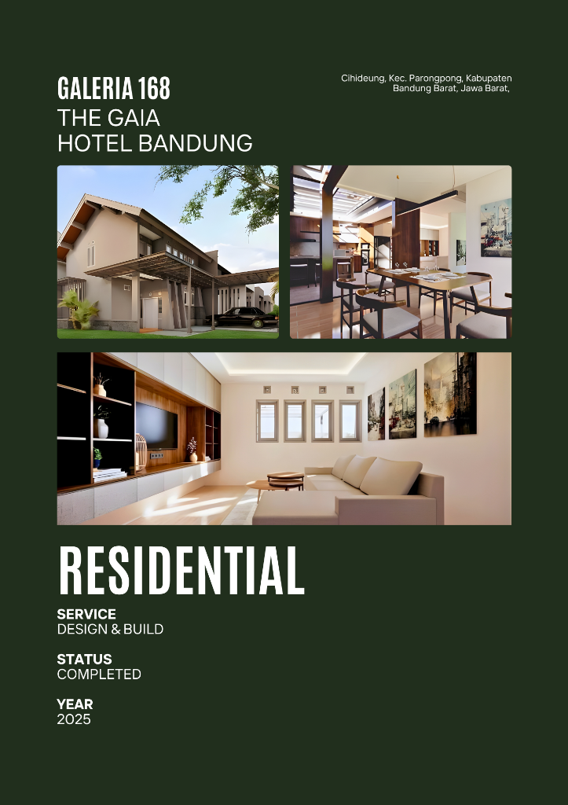
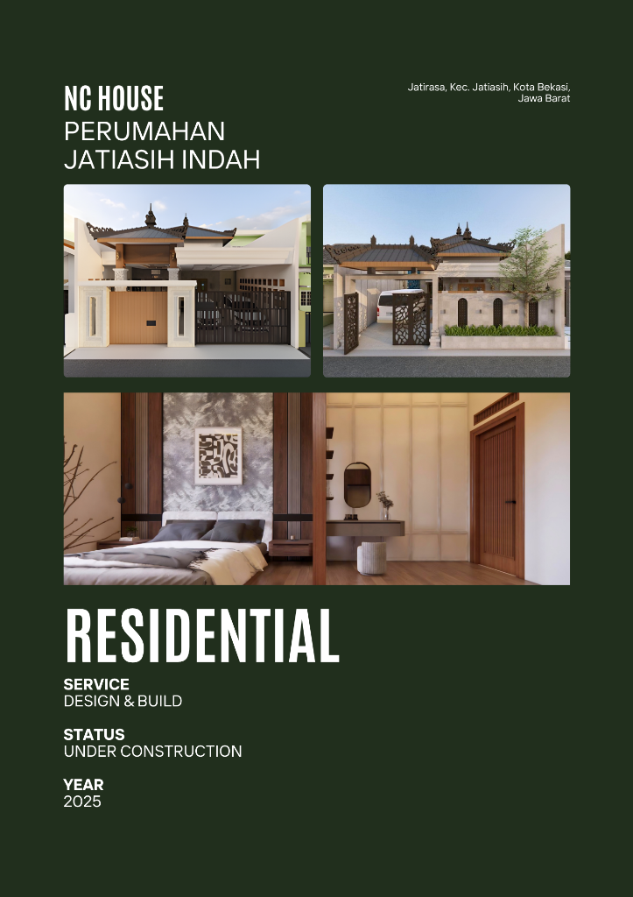
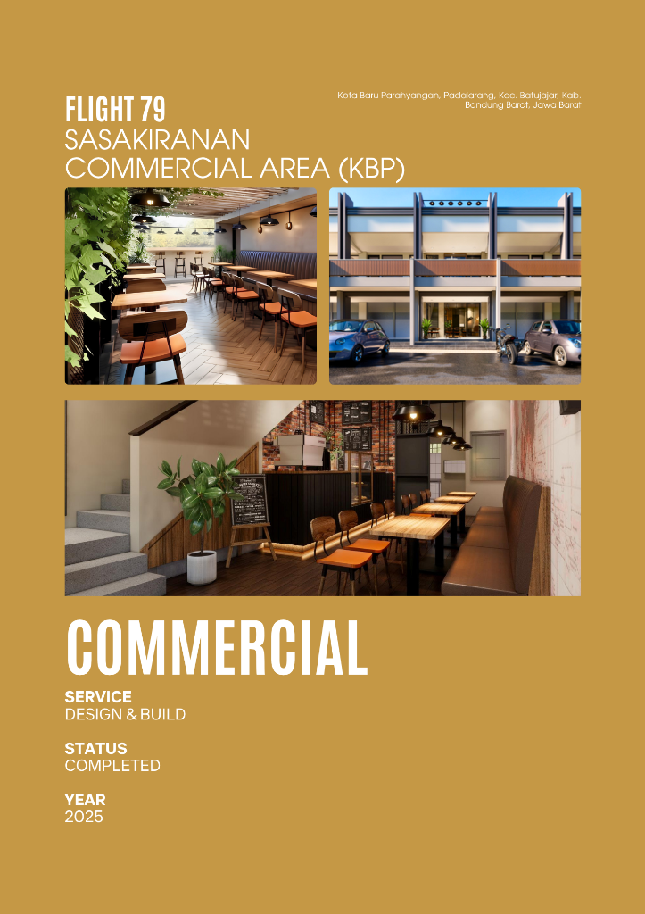

Galeria 168 - The Gaia Hotel Bandung
Status: Completed 2025. Proyek area komersial di Parongpong.

Status: Completed 2025. Proyek area komersial di Parongpong.

Status Pembangunan Berjalan / Under Construction 2025.

Desain Ruko/Area Komersil 2025.